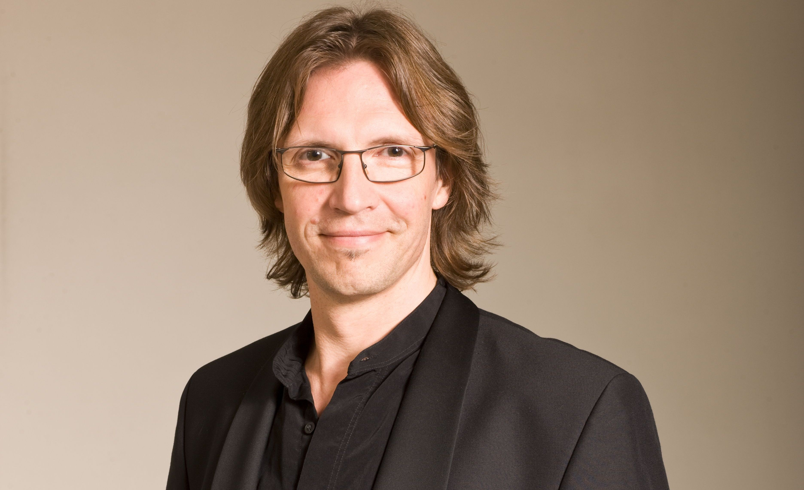

Latvijas Radio koris
Galvenais diriģents un kopš 2024. gada mākslinieciskais vadītājs. Viens no būtiskākajiem ansambļiem laikmetīgajā Baltijas kormūzikā.
Diriģents | Mākslinieciskais vadītājs | Laikmetīgā kormūzika
Starptautiski novērtēts latviešu diriģents, kurš veido profesionālās kormūzikas skaņas, klusuma un izteiksmes nākotni.

No Baltijas kordziedāšanas tradīcijas līdz jaunās mūzikas priekšplānam Putniņš veido priekšnesumus, kuros precizitāte, risks un atmosfēra kļūst par vienotu muzikālu valodu.
Biogrāfija
Rīgā dzimušais Kaspars Putniņš studējis Latvijas Mūzikas akadēmijā un Gildholas Mūzikas un drāmas skolā Londonā. Viņa karjeru raksturo profesionālu koru vadība, cieša sadarbība ar komponistiem un konsekventa vēlme paplašināt priekšstatu par to, kas koris var būt.
Viņa darbs savieno renesanses skaidrību, pareizticīgo un Baltijas sakrālās tradīcijas, romantisma dziļumu un laikmetīgus skaņas meklējumus. Eiropā un ārpus tās Putniņš tiek aicināts veidot priekšnesumus, kuros koris kļūst par krāsas, elpas, arhitektūras un cilvēciskas klātbūtnes instrumentu.
Galvenie amati
Galvenais diriģents un kopš 2024. gada mākslinieciskais vadītājs. Viens no būtiskākajiem ansambļiem laikmetīgajā Baltijas kormūzikā.
Galvenais diriģents un mākslinieciskais vadītājs, tostarp godalgotu Arvo Pērta un Alfrēda Šnitkes ierakstu vadītājs.
Galvenais diriģents vienam no Eiropas nozīmīgākajiem profesionālajiem koriem, turpinot Ērika Ēriksona un Tenu Kaljustes veidoto māksliniecisko līniju.
Mākslinieciskā identitāte
Arvo Pērts, Alfrēds Šnitke, Pēteris Vasks, Ēriks Ešenvalds, Baltijas komponisti un jaunas Eiropas balsis.
Pareizticīgo repertuārs, Rahmaņinovs, Baltijas sakrālie darbi un mūsdienu garīgā mūzika.
Sadarbība ar RIAS Kammerchor, SWR Vokalensemble, Collegium Vocale Gent, Nīderlandes Radio kori un citiem ansambļiem.
Meistarklases, darbnīcas un profesionāla apmācība diriģentiem, komponistiem un vokālajiem ansambļiem.
Ieraksti
Ierakstīts ar Igaunijas Filharmonijas kamerkori; guvis nozīmīgu starptautisku kritikas atzinību.
Pirmatskaņojumi un ieraksti ar komponistiem Baltijas reģionā un plašākā laikmetīgās mūzikas laukā.
Plaša diskogrāfija ar eksperimentāliem darbiem, sakrālo repertuāru, Baltijas mūziku un starptautiskām sadarbībām.
Presei
Kontakti